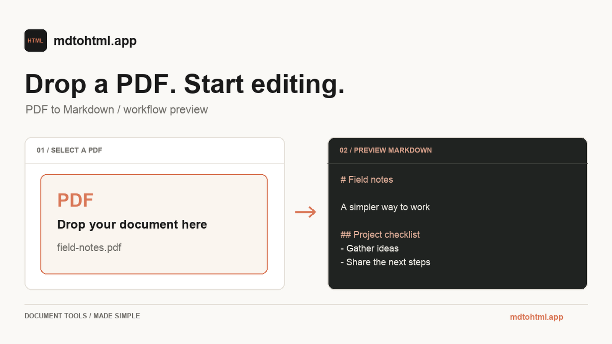
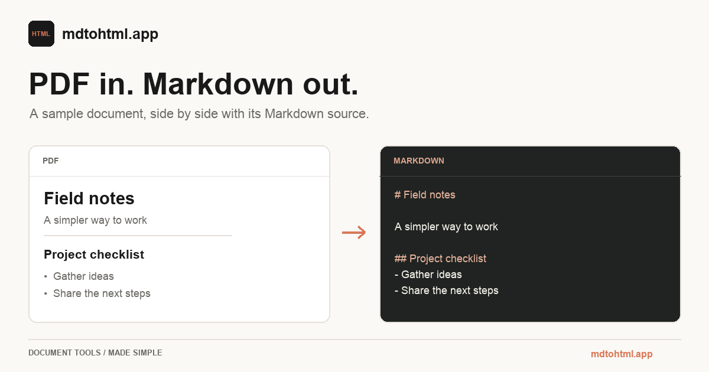

Convert a text-layer PDF to Markdown in your browser — private, free, no upload. Copy or download .md.

Drop a PDF here — or click to choose
Runs locally with pdf.js · .pdf only · nothing uploaded
Text-layer PDFs only. Scanned / image-only PDFs need OCR — we do not run OCR yet. If a file has little or no extractable text, you’ll see a clear warning.
MARKDOWN
Private · browser-local · no upload
How to convert PDF to Markdown for free
01
Drop a PDF
Choose a text-layer PDF from your computer. The file never leaves your browser.
02
We read the text layer
pdf.js extracts selectable text and rebuilds readable Markdown — headings guessed from font size.
03
Copy or download .md
Preview the result, copy it, download a .md file, or open it in Markdown → HTML.

Sample conversion — PDF text layer in, clean Markdown out. No upload.
Drop a text-layer PDF onto the box above (or click to choose a file). Conversion runs in your browser with pdf.js. Then copy the Markdown or download a .md file.
Is it free?
Yes — 100% free with no paid tier, no signup, no credit card, no watermark and no daily limits. Every tool on mdtohtml.app works the same way.
Do files upload?
No. Your PDF stays on your device. Extraction and conversion happen entirely in the browser — nothing is uploaded to our servers.
Scanned PDFs?
Not supported yet. This tool reads the PDF text layer only. Scanned or image-only PDFs need OCR, and we do not run OCR. If little or no text is found, you’ll see a warning instead of empty Markdown.
PDF to MD vs DOCX to MD?
PDF to Markdown extracts text from a PDF’s text layer and rebuilds readable Markdown locally. DOCX to Markdown starts from Word’s structured XML (headings, lists, tables) and usually preserves richer formatting. Use this tool when your source is a PDF; keep the Word file and a DOCX converter when you still have .docx.